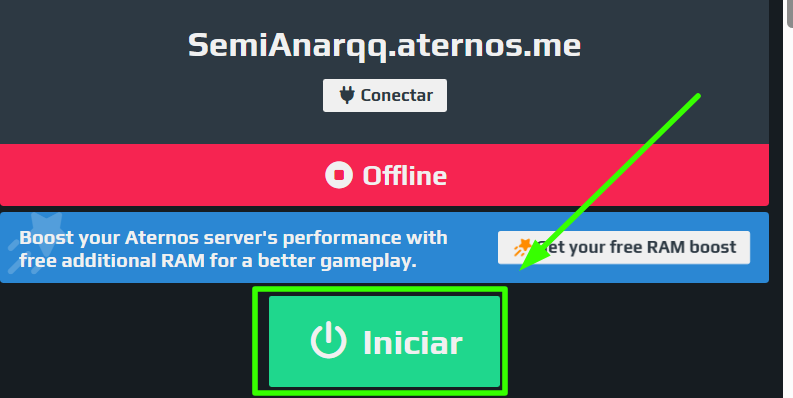

Esse Servidor é hosteado pelo aternos,para jogar nele você tem que inicia-lo manualmente siga o passo a passo abaixo
1-Entre no site do aternos
2-faça login no aternos
3-inicie o servidor

4-Entre no servidor pelo seu minecraft